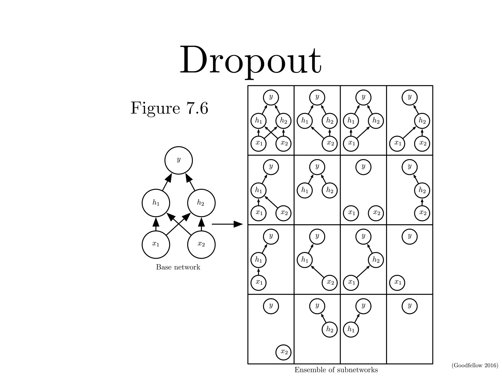

Goodfellow Deep Learning — Chapter 7.12: Dropout
Limitation of Bagging
When training a very large neural network, it is often impractical to train and average multiple models because the computational cost is too high.
Dropout
Dropout is a computationally efficient alternative to bagging that trains an ensemble of subnetworks by randomly dropping units during training.
If we have \(n\) droppable units, each of them can be either kept or dropped independently, we have \(2^n\) subnetworks.
\[ 2\times2\times2\text{...}\times2=2^n \]

Comparing with Bagging
Assume our task is to output the probability.
Bagging (Equation 7.52): Averages predictions from \(k\) independently trained models.
\[ \frac{1}{k}\sum_{i=1}^kp^{(i)}(y|x) \]
Dropout (Equation 7.53): Takes a weighted sum over all possible mask configurations, where \(p(\mu)\) is the probability to sample mask \(\mu\).
\[ \sum_\mu p(\mu)p(y|x,\mu) \]
Masks
We use a vector to represent masks for each unit:
\[ \mu=[\mu_1,\mu_2,...\mu_n] \]
During training, we sample masks:
\[ \begin{aligned} h &= [h_1,h_2,...,h_n] \\ h' &= h\odot\mu \end{aligned} \]
For example, if \(\mu=[1,0,1]\), then \(h'=[h_1,0,h_3]\)
Feasibility of Simple Forward Propagation in Dropout Inference
Using geometric average (Equation 7.54):
\[ \tilde{p}_{\text{ensemble}}(y|x)=\sqrt[2^d]{\prod_{\mu}p(y|x,\mu)} \]
Normalization (Equation 7.55): Assuming the distribution is uniform:
\[ p_{\text{ensemble}}(y|x)=\frac{\tilde{p}(y|x)}{\sum_{y'}\tilde{p}(y'|x)} \]
Deriving the Weight Scaling Rule
For model families without non-linear hidden units, we can derive an exact solution.
Standard softmax output (Equation 7.56):
\[ P(y=y|v)=\text{softmax}(W^\top v+b)_y \]
With dropout mask (Equation 7.57):
\[ P(y=y|\mathbf{v};\mathbf{d})=\text{softmax}(\mathbf{W}^\top (\mathbf{d}\odot\mathbf{v})+b)_y \]
Ensemble prediction (Equation 7.58):
\[ P_{\text{ensemble}}(y=y|\mathbf{v})=\frac{\tilde{P}_{\text{ensemble}}(y=y|\mathbf{v})}{\sum_{y'}\tilde{P}_{\text{ensemble}}(y=y'|\mathbf{v})} \]
Geometric average (Equation 7.59):
\[ \tilde{P}_{\text{ensemble}}(y=y\mid\mathbf{v})=\sqrt[2^n]{\prod_{\mathbf{d}\in\{0,1\}^n}P(y=y\mid \mathbf{v};\mathbf{d})} \]
Expanding the softmax (Equation 7.62):
\[ \tilde{P}_{\text{ensemble}}(y|\mathbf{v}) = \sqrt[2^n]{\prod_{\mathbf{d} \in \{0,1\}^n} \frac{\exp(\mathbf{W}_y^\top(\mathbf{d} \odot\mathbf{v})+b_y)}{\sum_{y'}\exp(\mathbf{W}_{y'}^\top(\mathbf{d}\odot\mathbf{v})+b_{y'})}} \]
Separating numerator and denominator (Equation 7.63):
\[ \tilde{P}_{\text{ensemble}}(y \mid \mathbf{v}) = \frac{\sqrt[2^n]{\displaystyle \prod_{\mathbf{d} \in \{0,1\}^n} \exp\big(\mathbf{W}_{y}^{\top}(\mathbf{d}\odot \mathbf{v}) + b_y\big)}}{\sqrt[2^n]{\displaystyle \prod_{\mathbf{d} \in \{0,1\}^n} \sum_{y'} \exp\big(\mathbf{W}_{y'}^{\top}(\mathbf{d}\odot \mathbf{v}) + b_{y'}\big)}} \]
Key properties of exponentials:
\[ \begin{aligned} \prod_i e^{a_i} &= e^{\sum_i a_i} \\ \sqrt[k]{\prod_i^k x_i} &= \exp\left(\frac{1}{k}\sum_i\log x_i\right) \end{aligned} \]
Since the denominator is constant with respect to \(y\) (Equation 7.64):
\[ \tilde{P}_{\text{ensemble}}(y=y|v) \propto \sqrt[2^n]{\prod_{\mathbf{d} \in \{0,1\}^n} \exp(\mathbf{W}_y^\top(\mathbf{d}\odot v)+b_y)} \]
Applying the geometric average property (Equation 7.65):
\[ = \exp\left(\frac{1}{2^n}\sum_{\mathbf{d} \in \{0,1\}^n} (\mathbf{W}^\top(\mathbf{d}\odot v)+b_y)\right) \]
Final result (Equation 7.66):
\[ = \exp\left(\frac{1}{2}\mathbf{W}^\top v+b_y\right) \]
This shows that at inference, we can simply scale weights by the keep probability (e.g., 0.5) instead of sampling multiple masks.
Intuition: Each unit has probability 0.5 of being active, so the expected input is \(0.5 \times v\). Therefore, multiplying by 0.5 at inference approximates the ensemble average.
Computational Efficiency of Dropout
Dropout acts as an implicit ensemble, where all subnetworks share the same parameters within one network.
During training: Each unit has a probability (e.g., 0.5) of being active, so all \(2^n\) subnetworks are trained efficiently within a single forward/backward pass.
During inference: Only one forward pass is required — we simply multiply the activations (or equivalently the weights) by the keep probability (e.g., 0.5).
Alternative approach: Gal and Ghahramani (2015) found that some models can achieve better classification accuracy by using Monte Carlo approximation with around 20 dropout samples. The optimal number of samples for inference approximation appears to be problem-dependent.
Dropout outperforms traditional low-cost regularization methods (e.g., weight decay, norm or sparsity constraints) and can be combined with them for additional gains.
Limitations of Dropout
Requires a sufficiently large model capacity
Dropout is most effective when the network has enough parameters to compensate for the random removal of units. Small models may underfit when dropout is applied.
May be less effective with small training datasets
When the dataset is small, the stochastic noise introduced by dropout can overwhelm the learning signal, leading to unstable training or degraded performance.
Intuition and Insights Behind Dropout
Dropout forces each unit to perform well independently, without relying on the presence of specific other units. This encourages the network to learn redundant yet complementary representations, so that every subnetwork formed during dropout can perform reasonably well. As a result, combining many of these “good-enough” subnetworks produces a more powerful ensemble.
Biological inspiration: Hinton proposed that dropout resembles the process of gene exchange between organisms. Evolutionary pressure not only rewards strong genes but also favors genes that remain effective after recombination. Similarly, dropout encourages units to learn features that are robust to co-adaptation and can function well under many combinations.
Adaptive destruction: By randomly “corrupting” its own input during training, dropout teaches the network to adapt to noise and missing information. This adaptive destruction mechanism leads to features that are more stable and robust to input perturbations and unseen conditions.
Source: Deep Learning (Ian Goodfellow, Yoshua Bengio, Aaron Courville), Chapter 7.12